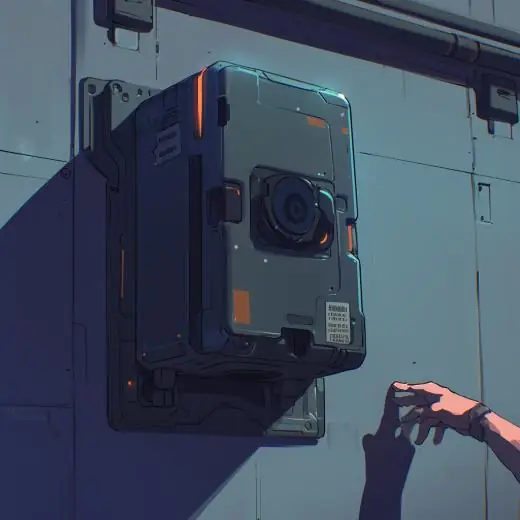
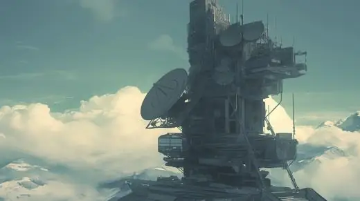

(Volume 2) Info page: Void Transmission Tech
Through the guidance of the music pillar, the D.S.O had invented a new method of
surveillance. Through the use of Void Transmission technology, people across the
world could view the events of the National Exam in real time. From open fields to the
smallest compartments hidden beneath a building.
A basic guide to the technology
- Spec Camera: Collects visual feed from several miles away.
- D.S.O Relay: Receives and transmits the collected data.
- D.S.O.I (Intelligence): Converts this information into visual data, with the help of
several supercomputers.
Extended Method of transmission
The Spec Camera: Large black boxes that emit a web of sensory particles across their
designated area. Each box is encased in a thin layer of polycarbonate glass, with each
unit containing a core of advanced computational hardware, typically equipped with
the latest generation DU-32 decoding chips. Behind these processors lies a secured
compartment that houses semi-unstable VX crystals that have been meticulously
tuned for high-precision sensory data.
<image: DeviceRGB, width: 520, height: 520, bpc: 8>
D.S.O Relays: There are several transmission towers and satellites owned by the
D.S.O. These are partially used to receive and transmit any information sent by a Spec
Camera. Each relay is specifically adapted to stabilise the raw and unstable format of
VX energy.
<image: DeviceRGB, width: 520, height: 291, bpc: 8>
D.S.O.I (Intelligence): The Intelligence sector of the D.S.O receives and converts these
transmissions to comprehensible information. This is possible due to the technological
milestone of the supercomputer, capable of translating stabilised and compressed
sensory data received via the relays across the globe.
Extra facts
- The first-generation spec cameras are capable of firing sensory particles across
a 5-mile radius and can be fine-tuned to specific locations.
- Due to their sub-atomic size and complex structure, VX particles allow data to
be densely encoded and transmitted efficiently via electromagnetic signals.
- The transmitted information may appear slightly simple at first glance, but it
contains an incredibly dense collection of data that a supercomputer can
convert into a visual feed.